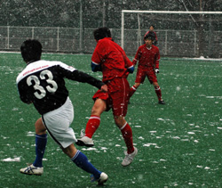
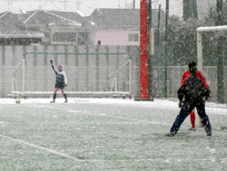

|
Hachioji Park, Sat 21st January. Usually you can expect a game on the lush Hachijoji Park artificial pitch will not be cancelled due to weather, however, waking up of Saturday morning to near blizzard conditions and a good 5cm of snow lying on the ground in Tokyo most of the BFC squad were already planning a lazy day indoors. So it was with great surprise the call came that the game was ON.
The BFC made there usual early meeting time with Jyrki the only one who was looking at home in artic conditions. The biggest questions in the changing room was how many layers to wear and if a bobble hat was acceptable attire - no-one ventured as far as to suggest tights but later Timo would show just how that accessory could be worn with aplomb. No time for a proper warm up but Neil warmed the hearts with a rallying call to the troops before kick-off. As a result the BFC were in a positive frame on mind, looking to avenge a 3-0 defeat to Jetro a few weeks earlier.
The game started at a high tempo with the BFC enjoying the greater majority of play. Some excellent play in the opening 20 minutes resulted in a few half chances but could not open the scoring. Jetro seemed quite happy to sit back and absorb the pressure and try and hit on the break - as the half wore on and the BFC committed more men forward searching for the opening goal Jetro did have some chances on the break but Jyrki was alert to any dangers and was never really troubled.
Half time team talk was conducted indoors as everyone tried to warm up - they key message was lets keep the pressure up and surely the goals will come. And so it was that the second half started in much the same fashion as the first and a number of chances came and went - half an appeal for hand ball from a cross, a clearance off the line and some good Jetro goalkeeping kept the score at 0-0. The snow started falling harder and the conditions underfoot got steadily worse but the BFC tempo, commitment and energy levels maintained a very good level.
In the dying minutes of the game the BFC central defenders decided to have a foray up front in search of the ellusive goal but the move broke down and a quick break by Jetro left a 3 on 1 situation which resulted in Jyrki having to pull off an outstanding reaction save. There was still time for one last BFC attack but to no avail so honours even 0-0 keeping BFC ahead of Jetro in the league. Overall a very good team performance from the BFC which deserved a victory, this will need to be carried over to next week against the Swiss and hopefully the goals will flow!!
Report - PL
|